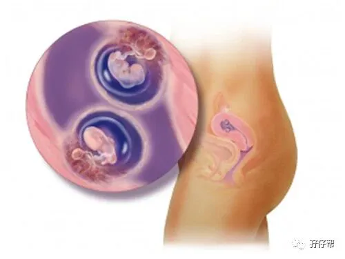
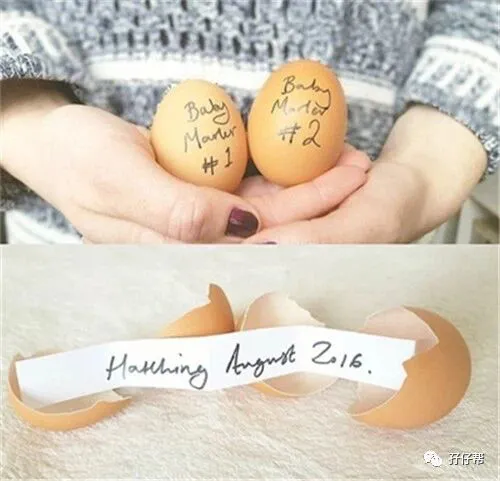
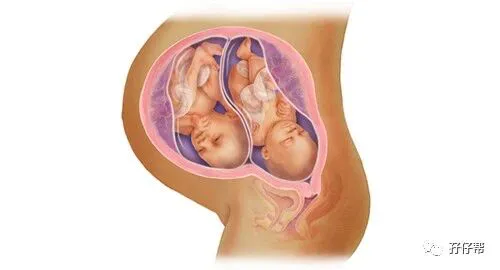
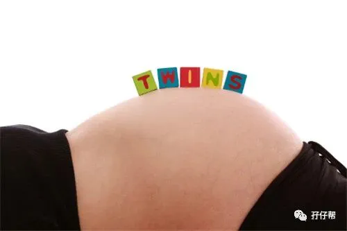

文|圆圈妈，一个文思如尿崩的双胎妈妈
图|来自网络，如有侵权，请联系删除
· 正 · 文 · 来 · 啦 ·
原本并没有打算写双胎子宫日记系列连载。
18年5月，我还在职场上煎熬着，唯一的兴趣就是晚上把圆圈兄弟哄睡后，能挪点时间安安静静地码字。
写的都是关于养育双胞胎的一些心得体会，非常稚嫩直白的经验分享，然后把文章发表在一个叫“孖仔帮”的公众号上。
有好几次，后台收到粉丝的留言，询问双胎妊娠的一些注意事项，无奈，我时间有限不能一一回答。
咨询的人大多是新手妈妈，问题都比较集中，无非就是孕期较常见的问题，如怀了双胞胎风险大吗？孕吐，吃不下，睡不着怎么办？心里很忐忑如何是好？出现并发症还有救吗…
我看到这样的你们特别亲切，好像看到四年前的自己，一脸茫然，焦虑，紧张…可是丝毫不能掩盖内心雀跃而激动的心情。
也有二胎来了双胞胎的妈妈，同样一脸懵逼。
毕竟，孕育双胎和单胎是完全不一样的两个概念，经验不能混为一谈，甚至毫无参考价值。
很遗憾的是，目前国内并没有针对双胞胎的育儿网站。
作为新手妈妈的我，也曾遇到很多孕期苦恼，苦于无经验可循，只能靠自己那半吊子英文水平去翻阅国外的双胎孕育经验知识。
国外关于双胞胎的孕育知识非常全面具体，我从中受益匪浅。
以至于我公号文章中提到的很多观点，大多来源于国外育儿论坛中一些育儿达人的经验和专家大咖的解答。
▲ 双胎孕5周胎儿图▲
18年8月，我成了全职妈妈，圆圈兄弟也即将入园，我有更多时间专心码字了。
我想起曾经答应过一位双胎妈妈，要把双胎孕期经历分享出来，而且，我还发了毒誓！
于是，我打开我的电脑某盘，那里保存着一个Word文档：我的双胎孕期日记，10万字+
18年9月，我开始动笔了， 把那些流水账日记重新排版整理，11月底基本上定稿。
《我的双胞胎孕期回忆录》，共有32个章节，记录了我的双胎孕4周到孕35周的过程，并在2018年12月13日在公众号上推送出第一篇子宫日记。
简单说下我的双胎孕期情况！（其实我在孖仔帮公号上或多或少提到过）
我的双胎妊娠，只有两个字概括：顺利！
没有无创DNA高风险，没有双输TTTs,没有生长受限，没有生长不一致，没有妊娠高血压，没有妊娠糖尿病…
双胎妊娠的常见并发症，我都得以幸免，一路过六关斩五将地熬到35周+5天，剖宫产下一对同卵男宝宝。
而这对男宝宝就是现在孖仔帮公众号文章里的两位男主角，双胞胎兄弟圆圆&圈圈。
虽然生产时出血过多，血压飙升差点送抢救室，还被疑似脑积血被拖去照CT确诊，但都是有惊无险。
两宝体重均有5斤多，评分都是10分，没进温箱，在新生儿科观察了几天，没啥大问题。
也许我的双胎经历不是个成功的例子，对比双胎孕期群里那些熬到38周和39周才生，两宝体重达到6斤多甚至7斤且还能顺产的孕妈，我这...
简直是小巫见大巫。
果然，文章推送出去后，反响不是很好，阅读量不高。
说实话，我挺受打击的。
一度质疑是梁静茹给错了勇气，不然我怎么那么厚脸皮把这些流水账推送出来。
于是，有段时间，我暂停推送子宫日记系列的文章。
直到有一天，群里好几位妈妈都在咨询我啥时候更新孕周日记，知乎，微博和百度贴吧也不断有网友跟帖跪求更新。
更让我感动的是，有一单绒双羊的孕妈在微博留言说每天必看我的子宫日记，是文章支持着她熬过孕早期，孕周日记对她很有帮助，每篇日记都仔细看好几遍。
还有一位已经卸货的宝妈，每看完一篇日记就给我写读后感，分享她当时的心情，如今看文章回味起来，感觉找到了知音。
我这人真的不能夸！给我一点阳光我就灿烂。
我像个上台表演被老师表扬的小学生，大受鼓舞！
于是，我重新给我的子宫日记下定义。
不是我的日记帮助了谁，而是通过子宫日记，我能结识到很多跟我有共鸣，有同感，有默契的同道中人，
让我感觉到在双胎育儿路上，我不是一个人那么狼狈不堪。
条条框框的孕育理论多了去，不如来点真枪实弹的双胎孕育经历，更加身临其境。
▲双胎孕32周胎儿图▲
我的子宫日记没有晦涩难懂的理论知识，也没有束手束脚的注意事项。
更多的是记录了我在双胎妊娠期间遇到的囧人囧事，我犯过的错误，踩过的坑，走过的弯路…
每个经历都是我的真实体验，目的是给双胎妈妈一些启发，一点提示，而不是指导。
任何人的孕育经验都只能是参考借鉴，而不能成为你孕期的绝对信条。
子宫日记内提到的相关TIPS，大多摘录或引用专业医学上的参考文献，有些还来源于三甲医院，正规医学机构或者网红医生的科普文章，比如段爷...
目的是鼓励各位姑娘们，少问度娘，多看科普文章。
唯有胸怀墨水，才不至于被网上那些耸人听闻，断章取义的鸡汤文吓到七魂丢了六魄。
我们这一代的父母，大都乐于学习，尤其是关系到孕育后代这么大件事情，我们都愿意付诸行动和努力。
现如今，资讯发达，各种孕育经验五花八门，关注一些专家达人的公号，下载几个孕育APP，多听几节微课堂，机智如你，很快就能秒变育儿专家或孕育达人。
然而，经验办法从来不少，怀孕知识从来不缺，缺的是正能量的孕育心态。
写公号期间，我遇到的是，依然有很多姑娘怀上双胞胎之后，一脸焦虑，恐慌，迷茫...
时常会遇到一些沮丧失控的姑娘，大半夜还给我发来整屏哭泣的表情：哭诉孕吐难受，吃不下，睡不着，队友不给力，度日如年….好想解脱…
这个时候，我通常是沉默的！
我觉得大多数孕期的双胎妈妈都有一个共同点：缺爱！缺理解！
她们并非不懂那些大道理，基本的孕育知识都知道。
她们愿意跟我分享苦恼，大多是看了我的文章后，感觉戳到痛点了，觉得我也是双胎妈妈，是同频道的人，能理解，有共鸣，能沟通。
因此，我在此大胆放言！
不管你看了多少孕育书籍，储备了多少经验知识，只要你怀上双胞胎，内心经常冒出那些忐忑，苦于无人倾诉。
那么，来看看我的双胎子宫日记吧。
也许你能从日记中找到自己的影子，发现很多槽点，尿点，笑点，泪点，痛点…
但毋庸置疑的是，你觉得你并不孤单了，有人懂你了。
这就是我想要的效果！写子宫日记的初衷！
记得哦，看完日记后加入我们的双胞胎孕育大家庭吧！双胞胎孕期群欢迎你！
这里是你的半个娘家！
希望我那些不加修饰，有点走心的文字对你有点启发，陪伴你走过这段痛并快乐着的双胎孕期，帮助你走出内心的困境，以积极乐观的心态迎接两个新生命的到来。
最后，预祝孖仔帮的所有双胎妈妈孕期平安顺利，静待足月分娩，母婴同室。
我是孖仔帮帮主圆圈妈
2019年04月10日
我的双胎子宫日记目录列表
连载（一）|圆圈妈双胞胎怀孕过程第4周
连载（二）|圆圈妈双胞胎怀孕过程第5周
连载（三）|圆圈妈双胞胎怀孕过程第6周
连载（四）|圆圈妈双胞胎怀孕过程第7周
连载（五）|圆圈妈双胞胎怀孕过程第8周
连载（六）|圆圈妈双胞胎怀孕过程第9周
连载（七）|圆圈妈双胞胎怀孕过程第10周
连载（八）|圆圈妈双胞胎怀孕过程第11周
连载（九）|圆圈妈双胞胎怀孕过程第12周
连载（十）|圆圈妈双胞胎怀孕过程第13周
连载（十一）|圆圈妈双胞胎怀孕过程第14周
连载（十二）|圆圈妈双胞胎怀孕过程第15周
连载（十三）|圆圈妈双胞胎怀孕过程第16周
连载（十四）|圆圈妈双胞胎怀孕过程第17周
连载（十五）|圆圈妈双胞胎怀孕过程第18周
连载（十六）|圆圈妈双胞胎怀孕过程第19周
连载（十七）|圆圈妈双胞胎怀孕过程第20周
连载（十八）|圆圈妈双胞胎怀孕过程第21周
连载（十九）|圆圈妈双胞胎怀孕过程第22周
连载（二十）|圆圈妈双胞胎怀孕过程第23周
连载（二十一）|圆圈妈双胞胎怀孕过程第24周
连载（二十二）|圆圈妈双胞胎怀孕过程第25周
连载（二十三）|圆圈妈双胞胎怀孕过程第26周
连载（二十四）|圆圈妈双胞胎怀孕过程第27周
连载（二十五）|圆圈妈双胞胎怀孕过程第28周
连载（二十六）|圆圈妈双胞胎怀孕过程第29周
连载（二十七）|圆圈妈双胞胎怀孕过程第30周
连载（二十八）|圆圈妈双胞胎怀孕过程第31周
连载（二十九）|圆圈妈双胞胎怀孕过程第32周
连载（三十）|圆圈妈双胞胎怀孕过程第33周
连载（三十一）|圆圈妈双胞胎怀孕过程第34周
连载（三十二）|圆圈妈双胞胎怀孕过程第35周
-END-
重磅互动
#你希望写什么育儿经验干货？#
评论区聊一聊
随便提，万一下篇就写了呢？
关于这个号
谢谢关注！
我是圆圈妈
85后，全职妈妈
家有孖仔两枚，圆圈&圈圈
双胞胎育儿公众号：孖仔帮
ID:twinsbang
旨意分享双胞胎育儿经验帮助双胞胎家庭
有经验可循
有组织可靠
希望我的经验对您有所启发
期待与您一起共享双胞胎育儿经



